4 years ago, specifically during the third quarter of December 2017, the Ministry of Petroleum and the metal wealth announced the start of production and natural gas pumping from the back of the months, the largest gas production fields in Egypt, most importantly with the Mediterranean water. That field, which is rebuilt in the vital sector, which was not only reliable in the product outside the ordinary ordinary, but had been very large at the regional and political levels, economic notes, since he was the standard time of the development of the development of the Gaza with the region with the main precautions, to the moment of the first drop, the world has been final.
منذ 4 سنوات، وتحديدا خلال الربع الثالث من شهر ديسمبر عام 2017، أعلنت وزارة البترول والثروة المعدنية، عن بدء الإنتاج وضخ الغاز الطبيعي من حقل ظهر الأشهر، أكبر حقول إنتاج الغاز في مصر، وأهمها بمياه البحر الأبيض المتوسط. ذلك الحقل الذي أعاد مصر للريادة بذلك القطاع الحيوي، والذي لم يكن مردوده فقط في المنتج المستخرج من باطن أم الدنيا، وإنما كان له شأن كبير جداً على المستويات الإقليمية والسياسية والاقتصادية، ناهيك عن الزمن القياسي الذي قامت فيه أعمال التطوير منذ إعلان وجود غاز بتلك المنطقة باحتياطات كبرى، إلى لحظة استخراج أول قطرة، الأمر الذي أبهر العالم ولم يكن متوقعا بشكل نهائي
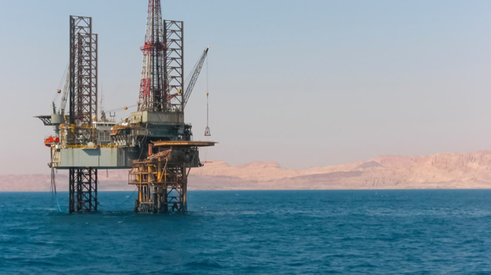.jpg)
President Abdel Fattah Al-sisi Witnessed the opening of the early production phase of the "back" field of natural gas in West Port said province, and "the largest gas field in Egypt has been discovered in the Mediterranean."The opening of the prime Minister of Defense and production, the Minister of petroleum and the Mineral Cooperation, Eng.Tariq Al Mulla and the number of ministers and senior men.
شهد الرئيس عبد الفتاح السيسي افتتاح مرحلة الإنتاج المبكر من حقل "ظهر" للغاز الطبيعي غرب محافظة بورسعيد، و"يعد أكبر حقل غاز في مصر تم اكتشافه في البحر المتوسط". حضر الافتتاح رئيس الوزراء المهندس شريف إسماعيل والفريق أول صدقي صبحي القائد العام للقوات المسلحة وزير الدفاع والإنتاج الحربي، ووزير البترول والثروة المعدنية المهندس طارق الملا وعدد من الوزراء وكبار رجال الدولة.
The Million and Average Award of the Feddah began to think about the project of the Million and a half award in 2014 and the project plan was launched in 2016 in the post of President Abdel Fattah Al-Sisi's rule, which was based on the Egyptian countryside. The project study includes its three-stages. It has the first phase of the first phase of the second phase of the second, including 490,000 acres, the 51,000 acres during the third phase. The project land was selected after a minute study where the project implemented the project to be the closest services of the services and means to contact easy to citizens to spend their needs easily. The selection has been held on 13 different areas in the eight governorates of the project, "New Valley, Qena, Aswan, Marsa Matrouh, South Sinai, Giza, Minya, Immail".
مشروع المليون ونصف فدان بدأ التفكير في مشروع المليون ونصف فدان في عام 2014 وتم اطلاق خطة المشروع في عام 2016 في عهد حكم الرئيس عبد الفتاح السيسي الذي أسند إدارته إلى شركة الريف المصري، وتشمل دراسة المشروع تنفيذه على ثلاث مراحل بحيث تضم المرحلة الأولى طرح نصف مليون فدان والمرحلة الثانية تشمل طرح 490 ألف فدان على أن يتم طرح 510 ألف فدان خلال المرحلة الثالثة. وقد تم اختيار أراضي المشروع بعد دراسة دقيقة حيث حرصت الشركة المنفذة للمشروع على أن تكون تلك الأراضي قريبة من الخدمات ووسائل الإتصال بحيث يسهل على المواطنين قضاء حاجاتهم بسهولة، وقد وقع الإختيار على 13 منطقة مختلفة في ثماني محافظات لتنفيذ المشروع وهم “الوادي الجديد، قنا، أسوان، مرسى مطروح، جنوب سيناء، الجيزة، المنيا، الإسماعلية”.
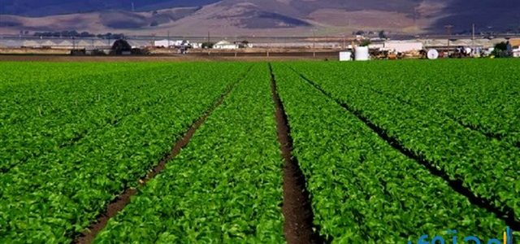 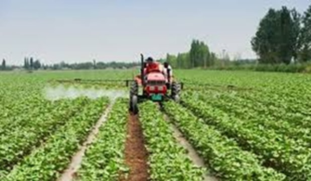The stages of the Million B & B are three times in the areas: the old phase, the new and new praise, the dazzling of the deer, the Hague's area, the Tariqi and the West of the Mashradah region. The seconds of the freshwater and the second stage. The seconds of the fresh and the phase of the new and oldest, the West of Comoupm, the West of Comoum, the West and the West of the United States of America, the West of Como, the West and the West of the following, the stage of the Surgean in the areas of the Vacuum Old, the South-East Sinai region, the West of the south, Esk.
مراحل مشروع المليون ونصف فدان ثلاثة مراحل :المرحلة الأولى: تبلغ مساحتها 500 ألف فدان في مناطق: الفرافرة القديمة والجديدة ومنطقة المغرة وامتداد الداخلة وقرية الأمل وتوشكى ومنطقة غرب المراشدة، والمرحلة الثانية: تبلغ مساحتها 490 ألف فدان في مناطق الفرافرة الجديدة والقديمة، ومنطقة غرب كوم أمبو، والمغرة، وغرب المنيا، وشرق سيوه، وجنوب شرق المنخفض، أما المرحلة الثالثة: فتبلغ مساحتها 510 آلف فدان في مناطق الفرافرة القديمة، ومنطقة الطور بجنوب سيناء، وامتداد جنوب شرق المنخفض، وغرب المنيا، ومنطقة غرب.
The project of golden triangle in the eastern desert, is located on an area of more than 2.2 million acres, between the sang of Gaza, Safaja and Shukir, the region is rich in the lower and hospitalized cosmetics, such as gold, pads, white sands, limestone, phosphietic rocks, the project will provide about 350,000 jobs. The company's total imports of $ 1.7 million, a project of the Kuwait Fund for Arab economic development. The project's importance is about $ 16.5 billion. The importance of the project of the Muhaly HIP me is a national Race 2030 B. Money Genometrics Global League.
يقع المشروع في الصحراء الشرقية، على مساحة تزيد على 2.2 مليون فدان، ما بين قنا وقفط وسفاجا والقصير, المنطقة غنية بالثروات التعدينية والمحجرية، مثل الذهب والبازلت والرمال البيضاء والحجر الجيري والصخور الفوسفاتية, المشروع سيوفر حوالي 350 ألف فرصة عمل, تم سداد أتعاب الشركة الإيطالية بقيمة 1.7 مليون دولار، بمنحة من الصندوق الكويتي للتنمية الاقتصادية العربية,يبلغ حجم استثمارات المشروع حوالي 16.5 مليار دولار, تكما أهمية منطقة المملث ال هبي لي الردية القومية2030 ب بم انتقاب مراكز النمو االقتلادية العالميةما اوروبا الي جنوم وجنوم كرق ا يا ادي الىالتوكير لي اعادا اكتكاف ملر مكانيا عا طريع ايبالبير األيمر كمدخب والبوابة الكرقية لمراكز النمواالقتلادي العالمي.
 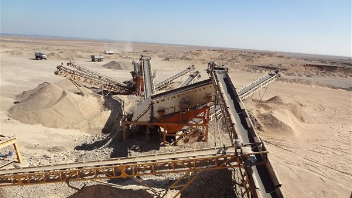
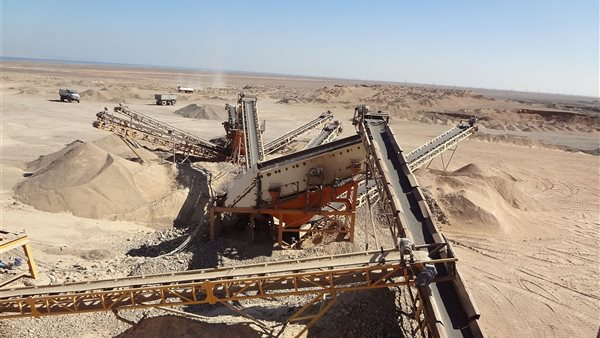
The objective of the project is the preparation of comprehensive geological and geopolitical studies, geological observation, gumoromology, metal wealth and natural risk as using sensor techniques and establishing a geographical information system to help planners in the sustainable development of the Golden Triangle.
الهدف من المشروع إعداد الدراسات الجيولوجية والجيوبيئية الشاملة والتخريط الجيولوجي والجيومورفولوجى والثروة المعدنية والمخاطر الطبيعية باستخدام تقنيات الاستشعار من البعد وإنشاء نظام معلومات جغرافي وذلك من أجل مساعدة المخططين في مجال التنمية المستدامة لمنطقة المثلث الذهبي
Al-Alameen city, one of the largest, highlights and the most important national projects in the Republic of Egypt, as they are semi-state of the new administrative capital. It has a residential and tourist towers as well as business centers feasible, so that it is why in the world's leadership, as it is better than the best and most important areas that are located in the north coast at the moment. "It is because it has its permanent water and water and its freshwater and its exact colors. It is an integrated city and services, and infrastructure, such as electrical water facilities, communications and sanitation, as well as private stations to maising water seas. This city is the first to reach the multidicite generation. This is a great distinction and its soothing contribution to a change of integration of this region. It is that where to take advantage of all the north-coast area. So as to have a area attracting tourists. It is a distinct residential destination, and all the recent attention has been turned on to the establishment of many different investment projects between residential or tourism, as well as to establish the towers that enjoy the world. There is a sign that the new projects in the next years will accommodate more than three million people. This is the end of the first phase of its implementation, the list of the residence and implementation of this city should be a huge tourist resort
مدينة العلمين، أحد أكبر و أبرز و أهم الـمـشروعات القومية الموجودة بجمهورية مصر، حيث أنها شبه بالعاصمة الإدارية الجديدة. فـهي تحتوى على أبراج سكنية و سياحية وكذلك مراكز تجارية تتميز بالعالمية، فكان ذلك سبب في توجه العالم لها حيث أنها تعد من أفضل و أحسن المناطق التي تكون موجودة بالساحل الشمالي في الوقت الحالي .و ذلك لأنها تتمتع برمالهاالناعمة و مياه بحرها النقية و الصافي، و ألوانها المبهجة، فهـي تعد مدينة متكاملة المرافق و الخدمات و يوجد بها البنية التحتية،مثل المرافق الخاصة بالكهرباء الماء، والاتصالات والصرف الصحي، كما يتوفر بها محطات خاصة بتحلية مياه البحر .وتعد هذه المدينة أول مدينة من طراز الجيل الرابع المليونية. وذلك لأنها متميزة وجديدة من نوعها وسوف تساهم في عمل تغيير بصورةكاملة لهذه المنطقة .ويكون ذلك أن حيث الاستفادة من كل المنطقة الخاصة بالساحل الشمالي. وذلك لكونها منطقة تقوم بجذب السياح. حيث أنها تعتبر وجهة سكنية متميزة، وجميع الأنظار في الآونة الأخيرة قد التفت إليها، وذلك لإقامة العديد من المـشاريع الاستثمارية المختلفة ما بين سكنية أو سياحية،وكذلك لإقامة الأبراج التي تتمتع بالعالمية. وهناك توقع بأن العلمين الجديدة في السنين القادمة سوف تستوعب ما يفوق الثلاثة ملايين نسمة. ويكون ذلك بأنتهاء المرحلة الأولى من تنـفيذها، فقد راعى القائمون على إقامة و تنـفيذ هذه المدينة على أن تكون عبارة عن منتجع سياحي ضخم
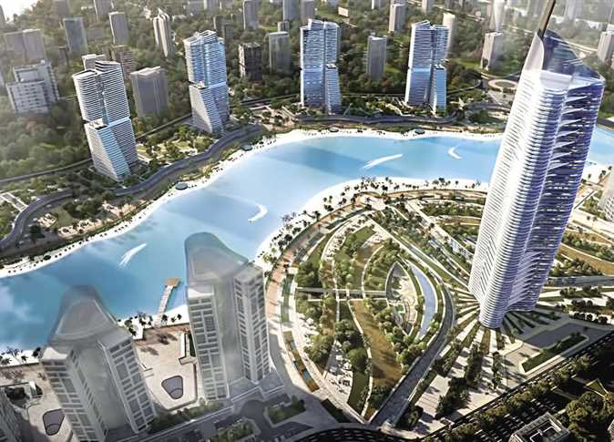 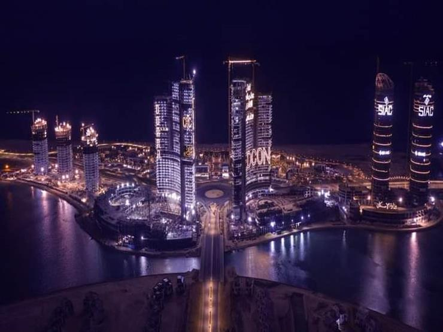The new Alamin city is one of the new cities and one of the fourth generation cities, the north coast, is within the border of Matruh province. The objective of its creation was to promote development, in the housing sector, and the first eco-friendly city is considered a huge and entertainment project that has been established with multiple and different goals. That all the designs of its residential units have become more important and luxurious levels, and shall be in accordance with global designs.
مدينة العلمين الجديدة أحد المدن الجديدة السياحي و إحدى مدن الجيل الرابع، الموجودة الساحل الشمالي، فهـي ضمن الحدود الخاصة بمحافظة مطروح. وكان الهدف من إنشاؤها، هو النهوض بالتنمية، بالقطاع الإسكاني، وتعتبر أول مدينة تكون صديقة للبيئة فهو يعتبر مشروع ضخم وعملاق تم إقامته بأهداف متعددة ومختلفة، كما أن القائمين على هذا المشـروع الكبير. بأن تصبح كافة تصميمات الوحدات السكنيه الخاصة به، بأعلى مستويات الرقي والرفاهية، ويكون ذلك طبقاً للتصاميم العالمية
President Abdel Fattah Al-Sisi, the project, explained the video showed, President Abdel Fattah Al-Sisi, the new Qissat Assiut, which is one of the largest water-building facilities based on the Nile River, has recently improved to improve the case of irrigation, and is also the third largest water project on the Nile River after the high dam and the prostheckles Naga Hammadi, and implemented by the Union of International and National Companies. Strategic objectives of the project: - Insurance of water needs for present and future generations. Control of irrigation water. Keep each water drop of the salute, through modern gates with a hydraulic system for the open and lock, where these gates are manufactured in Egyptian factories. Improving the case of irrigation in the province of Egypt in 5 governorates (Giza - Fayoum - Beni Suef - Minya - Assiut); to serve a million and 650,000 acres, equivalent to about 20% of the farm area of Egypt in improving the Nahal River Navy's use of the control of the latest global systems; to control the actions and procedures as well as the establishment of a clean production plant to create a new traffic hydroelectric creator in the form of a civilized and environmental construction of the conservation of the province of the province by the project of the project to be aware of the space of the project in the form of a project and the way for the project to be aware of the segment of the sector. To provide more than 3,000 thousand chance a day, next to the Age of Agents and the art and technical working hard
افتتح الرئيس عبد الفتاح السيسي، المشروع موضح الفيديو المرفق افتتح الرئيس عبد الفتاح السيسي قناطر أسيوط الجديدة التي تُعَد من أكبر المنشآت المائية التي بنيت على نهر النيل مؤخرًا لتحسين حالة الري، ويُعد أيضًا ثالث أكبر مشروع مائي مقام على نهر النيل بعد السد العالي وقناطر نجع حمادي، وقام بتنفيذها اتحاد شركات عالمية ووطنية. الاهداف الاستراتيجية للمشروع:- تأمين الاحتياجات المائية للحاضر والأجيال القادمة.التحكم في مياه الري. الحفاظ على كل قطرة مياه من الهدر، وذلك عن طريق بوابات حديثة تعمل بنظام هيدروليكي للفتح والقفل، حيث تم تصنيع هذه البوابات في مصانع مصرية. تحسين حالة الري بإقليم مصر الوسطى في ٥ محافظات هي (الجيزة - الفيوم - بني سويف - المنيا - أسيوط)؛ لخدمة مليون و٦٥٠ ألف فدان أي ما يعادل نحو ٢٠٪ من المساحة المنزرعة بمصر تحسين الملاحة النهرية بنهر النيل باستخدام منظومة تحكم على أحدث النظم العالمية؛ للتحكم في التصرفات والمناسيب فضلًا عن إنشاء محطة لإنتاج الكهرباء النظيفة خلق محور مروري جديد بأسيوط يسهم في نقلة حضارية وبيئية لأبناء المحافظة من خلال صياغة مساحة تربو على ٢٣ فدانًا كأحد مكتسبات المشروع لتكون متنفسًا جماليًّا وسياحيًّا للمدينة بالإضافة إلى مردودها الاقتصادي.توفير فرص عمل لمختلف القطاعات تصل إلى أكثر من ٣ آلاف فرصة يومية بجانب حوالي ألف مهندس وعامل وفني يعملون بشكل ثابت
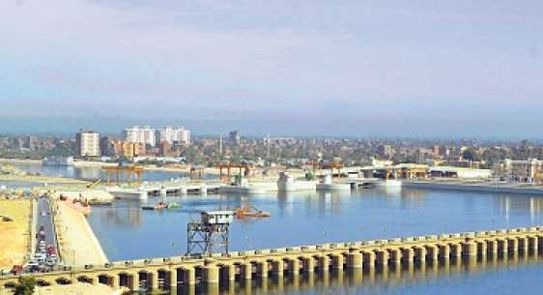 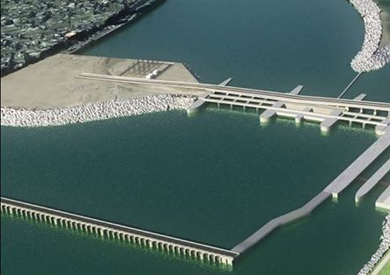Staff of the implementation of the project:-
In the light of the old wildche, which has been in the first in the
process of the main sanctuary, the addition of the right-winged therapy of the new al-Haqat, the addition of the
main ring of the newly the main scene of the new al-Qatar al-Alaba Al-Azim and the pharmaceuticals of the
two-way therapy and the petitions of the two-way therapy and the petitions of the two-storey al-Azim and the
petitions of the two-way therapy and the punctors of the two-way therapy and the punctors of the two-storey and
the petitions of the two-storey and the petitions of the two-storey and the petitions of the two-way therapy and
the punctors of the two-storey and the petitions of the two-storey and the petitions of the two-storey and the
petitions of the two-storey and the petitions of the two-storey and the petitions of the two-storey and the
petitions of the two-storey and the petitions of the two-storey and the petitions of the two-way therapy and the
punctors of the two-storey and the petitions of the two-way therapy and the punctors of the two-storey and the
petitions of the two-way therapy and the punctors of the two-way therapy and the punctors of the two-way therapy
and the punctors of the two-way therapy and the punctors of the two-way therapy and the punctors of the two-way
therapy andthe punctors of the two-storey and the punctors of the two-way therapy and the punctors of the
two-storey and the punishment of the two-way therapy The following is the basis of the main sanctuary and the
punctors of the two-storey and the petitions of the two-storey and the petitions of the two-storey and the
petitions of the two-way therapy and the punctors of the two-storey and the petitions of the two-way therapy and
the punctors of the two-way therapy and the punctors of the two-way therapy and the punctors of the two-way
therapy and the punctors of the two main scene and the punctors of the two-way therapy and the punctors of the
two-way therapy and the punctors of the two-way therapy and the punctors of the two-way therapy and the punctors
of the two-storey and the punctors of the two-way therapy and the punctors of the two-storey and the punctors of
the two-way therapy and the punctors of the two-way therapy and the punctors of the two-way therapy and the
punctors of the two-way therapy and the punctors of the two-way therapy and the punctors of the two-storey and
the punishment of the two-way therapy and the punctors of the two-way therapy and the punctors of the two-storey
and the punishment of the two-way therapy and the punctors
-:مراحل تنفيذ المشروع
في ضوء تهالك قناطر أسيوط القديمة التي مر على إنشائها ١١٥ عامًا، فقد أصبحت لا تستطيع بتصميمها القديم مواجهة
احتياجات الدولة الحالية؛ لذلك تم التفكير في إنشاء قناطر أسيوط الجديدة لتحل محل عمل القنطرة القديمة، حيث بدأت
أعمال هدم واستقطاع جزء من قناطر أسيوط القديمة في منطقة مسار المجرى الملاحي أمام الأهوسة الملاحية الجديدة، فضلًا
عن أعمال قطع وإزالة السد الدائري المؤقت والحفر لأعمال الحمايات بالقاع بالكامل خلف القناطر الجديدة وأعمال
الحمايات على الميل الأيمن لجزيرة بني مر وأعمال التركيبات الخاصة برصيف رسو السفن بالبر الأيمن بالخلف والأمام،
إضافة إلى رفع بوابات القناطر القديمة تم صب الخرسانة المسلحة للوصلة بين الأهوسة الملاحية الجديدة والقناطر القديمة
وصب نفق الكابلات على محور (١) والواصل حتى حوش المفاتيح إلى جانب نهو أعمال الخرسانة المسلحة بأسقف المبنى الإداري
وأعمال المباني بالأدوار المختلفة وكذلك تم صب الخرسانة العادية والمسلحة للمسجد ونهو الأعمال لبوابات الأهوسة
بالأمام والخلف وبوابات الأنفاق وأنظمة تأمين السفن، بالإضافة إلى إنهاء جميع الاختبارات الجافة لجميع البوابات
والملحقات والانتهاء من عمل اختبارات التشغيل لحاجز السفن للهويس وعمل الاختبارات النهائية لحاجز السفن بالهويس وضبط
نهاية المشاوير لوحدة الرفع الرئيسية بالونش القنطري وعمل اختبارات الضغط للأوناش القنطرية بالأهوسة الملاحية، وإلى
إجراء اختبارات تشغيل بوابتي الهويس بالأمام وعلب التجفيف أمام بوابتي الهويسين بالأمام وبوابات الأنفاق بالأمام
وبوابة الصيانة الخاصة بالأنفاق في الخلف بالهويسين وبوابة النفق بالهويس رقم ١ بالخلف وبوابة النفق بالهويس رقم ٢
بالخلف وبوابات الصيانة أمام الهويسين بالخلف ويتم العمل بنظام SCADA ؛ لربط منظومة التحكم الخاصة بالأهوسة
والمفيضات بالمبنى الإداري وذلك تحت إشراف الهيئة العامة للنقل النهري؛ لفتح الأهوسة الجديدة أمام حركة الملاحة
النهرية والسماح بمرور جميع الوحدات النهرية طيلة العام دون توقف
The farm project is a very important project for the national economy for people to deal with them and this for many of the reasons for providing young employment and girls and the homes of the houses and girls and those who want to work from home or have anyone to have a place of land or have any place of the house and have to do so, and have a mercy, the house surface or household spaces or a space of the houses and the bottom of the fish and the brick, the clubs, the grill of the festival of the fish and the bottom and the brick, the grill of the festival of the fish are therefore not of which are possible to eat the planting of the fish and the bulbs and the clubs, the grill of the faith and the bulbs and the clubs, the grill of the faith and the bulbs and the clubs, the Darnis and the grill and the grill, the cultivation of the planting on the tap or the maternity and salt. The project is aware of the water or the inner and salt. The project is the basis of water or the inner and salt. The project is the basis of water or the inner or salt. The project is the basis of water or the inner or salt. The project is the best in the whole of the most of the students from 20 years of age Agriculture Ain Shams, but at this time did not have been implemented and that the same in the waters of the ammonia in the water The material is the most of the information on the bottom of the project in the ponds of the time for 4000 years ago
ان مشروع مزرعة اسماك من المشاريع الهامه جدا للاقتصاد القومى ايضا للاشخاص المتعاملون عليها وهذا لكثير من الأسباب منها توفير فرص عمل للشباب وايضا ربات البيوت والبنات والى كل من يريد العمل من المنزل او لمن يمتلك مكان فاضى ويريد استغلاله مثلا شقه او غرفه منزلية او فوق اسطح المنازل او فى ارض فضاء فكل الاماكن مسموح فيها انشاء مشروع مزرعة سمكية وايضا هذا المشروع هام جدا لما ينتجه من انواع من الاسماك الهامه جدا وايضا النباتات التى من الممكن زراعتها اعتمادا على أحواض السمك ويوجد كثير من الأنواع التى من الممكن تربيتها مثل البلطى و البورى والطوبار والمبروك والحنشان و القراميط و الدنيس والجمبرى والقاروص فيمكن ان تقوم بإنشاء مزرعة لأى نوع من هذه الأنواع وايضا يمكن انشاء المزرعه اعتمادا على المياه الحنفية او الابار او المالحة اى أن المشروع تربيه الاسماك يصلح فى اى مكان وبكل الطرق الممكنة وايضا اى نوع مياه وايضا بدون رائحه او صوت او عماله لكن فقط مياه وكهرباء بسيطه جدا ومجهودك الشخصى ولا نحتاج الى ان نشير الى اهمية الاسماك كمصدر غذائي للإنسان فان هذه الفكرة مشروع تربية الاسماك تم طرحها من أحد الطلاب من 20 عام فى كليه الزراعه جامعه عين شمس لكن فى هذا الوقت لم يتم تنفيذها وهذا لان وجد بعض العيوب فيها وأهمها زيادة مادة الأمونيا فى المياه التى يتم تربية الاسماك فيها وهذا كان العيب القاتل لفكرة هذا المشروع وقتها لكن تم دراسة الفكرة دراسه وافيه الى ان اصبح هذا العيب من المميزات مشروع تربية الاسماك وجاءت أولى المعلومات عن تربية الأسماك في البرك من الصين منذ 4000 سنة، ومن بلاد ما بين النهرين منذ حوالي 3500 سنة، وتم دمج تربية الأسماك في البرك مع زراعة الأرز من فترة 25 إلى 220 سنة بعد الميلاد في الصين. كما عرف استزراع الأسماك في حوض البحر المتوسط في عهد الإمبراطورية الرومانية، ثم أصبح بعد ذلك إحدى وسائل أنظمة إنتاج الغذاء في الأديرة المسيحية في أواسط أوروبا. وفي الوقت الحاضر أصبحت تربية الأحياء المائية تتعدى تربية الأسماك في البرك أو في حقول الأرز، وإحصائياً تعرف منظمة الأغذية والزراعة (الفاو) تربية الأحياء المائية بكونها استزراع الأحياء المائية من سمك وقشريات وصدفيات ونباتات مائية
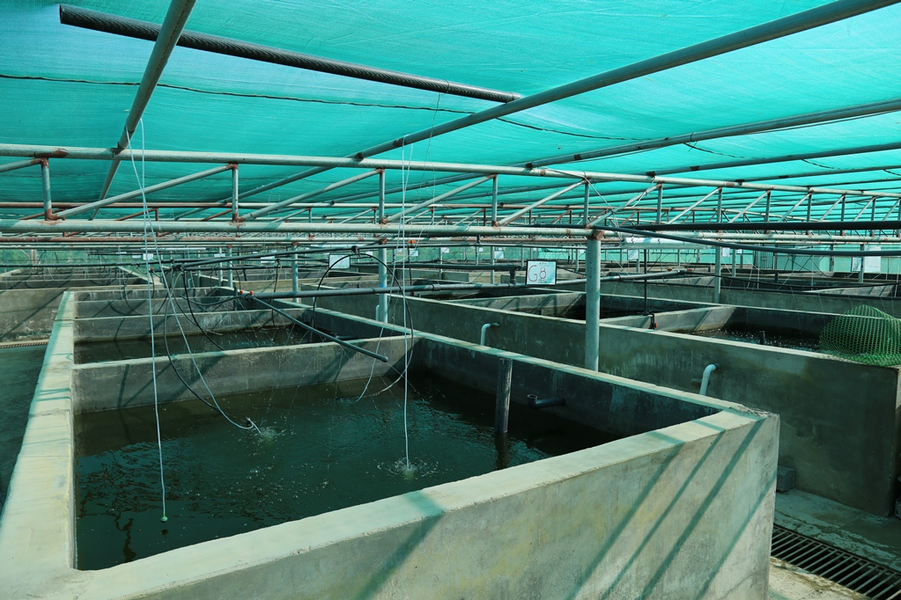 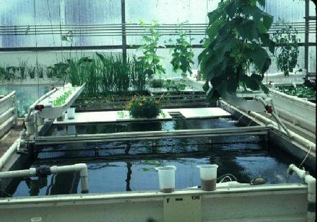Fish farms can be divided by the following factors:
1-Saline water scores, Fish farms fall
down to the following
sections: Marine water farms and are used by sea water farm Freshwater and use water, springs, eyes and
rainwater
:يمكن تقسيم المزارع السمكية حسب العوامل التالية
درجة ملوحة المياه:
فيها تقسم المزارع السمكية الى الاقسام الاتية
مزارع المياه البحرية
و هي التي تستخدم مياه البحار مزارع المياه العذبة
و فيها تستخدم مياه الانهار و الينابيع و العيون و مياه الامطار
The construction and support for the operation of the nuclear power plant was agreed upon through a number of contracts, namely the main engineering, supply and construction contract, the fuel supply contract, the operation and maintenance support contract and the spent nuclear fuel storage contract. The progress of the project is directly related to licensing Complete all legal documents necessary for the safety of the plant. This project encourages the participation of many local Egyptian companies in the construction and construction processes. The local participation rate is 20% for the first unit. This percentage increases in turn with the number of units increasing to 35% with the fourth unit. Safety and reliability are among the main factors in choosing the type of reactor and the technology used to build the plant At Dabaa, the technology used belongs to the upgraded third-generation reactor type, which fully conforms to the IAEA requirements established after the Fukushima accident
يقع موقع الضبعة على ساحل البحر المتوسط في شمال جمهورية مصر العربية وتعتبر هيئة المحطات النووية لتوليد الكهرباء هي المالك والمشغل للمشروع، وتعتبر مؤسسة روساتوم والشركات التابعة لها المقاولين الرئيسيين حيث تم الاتفاق على إنشاء والدعم في تشغيل المحطة النووية من خلال عدد من العقود وهى العقد الرئيسي للهندسة والتوريد والبناء وعقد توريد الوقود وعقد دعم التشغيل والصيانة وكذلك عقد تخزين الوقود النووي المستهلك ويرتبط تقدم العمل بالمشروع ارتباطا مباشرا باستخراج التراخيص حيث أن استخراجها يهدف للتأكد من استيفاء كافة الوثائق القانونية اللازمة من أجل أمان المحطة. وعليه فإن الهيئة تقوم باستخراج كافة التراخيص والأذونات المطلوبة المتعلقة بالموقع والإنشاء وتجارب بدء التشغيل والتشغيل والتي تصدر من هيئة الرقابة النووية والإشعاعية ويشجع هذا المشروع على مشاركة العديد من الشركات المحلية المصرية في عمليات التشييد والبناء حيث تصل نسبة المشاركة المحلية إلى 20% للوحدة الأولى، وتزداد هذه النسبة تباعا مع ازدياد عدد الوحدات الى أن تصل الى 35% مع الوحدة الرابعة ولقد جاء عامل الأمان والموثوقية من أهم عوامل المفاضلة لاختيار نوع المفاعل والتكنولوجيا المستخدمة لبناء المحطة النووية في الضبعة حيث تنتمي التكنولوجيا المستخدمة إلى نوعية مفاعلات الجيل الثالث المطور والتي تتطابق تماما مع متطلبات الوكالة الدولية للطاقة الذرية والتي وضعتها الوكالة بعد حادثة فوكوشيما
 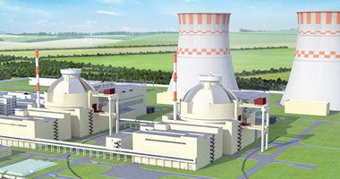
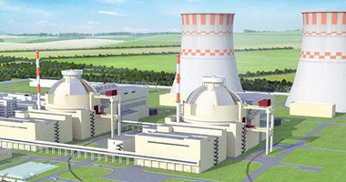
The project is implemented through three main stages:
The first stage: the preparatory stage has been started
since December 2017 aims to process and create the site to create the nuclear station, from 2 years to 4 years.
The second stage: Start after receiving the establishment of construction and includes all construction work,
construction and training of workers and preparation to start pre-operating tests, the second phase 5 and a half
years.
The last stage: Includes permission to make pre-operating tests that include operating tests and actual
startups and this stage continues to start the initial delivery of the nuclear unit and the operating license
version, and the pre-operation of the pre-operating tests 11 months
:يتم تنفيذ المشروع من خلال ثلاثة مراحل رئيسية
المرحلة الأولى: وهي المرحلة التحضيرية وقد بدأت منذ ديسمبر 2017 وتهدف إلى تجهيز وتهيئة الموقع لإنشاء المحطة
النووية، ومدتها من عامين ونصف إلى أربعة أعوام
المرحلة الثانية : وتبدأ بعد الحصول على إذن بدء الإنشاء وتشمل كافة الأعمال المتعلقة بالبناء والتشييد وتدريب
العاملين والاستعداد للبدء في اختبارات ما قبل التشغيل، ومدة المرحلة الثانية 5 أعوام ونصف
المرحلة الأخيرة : وتشمل الحصول على إذن إجراء اختبارات ما قبل التشغيل والتي تشمل إجراء اختبارات التشغيل وبدء
التشغيل الفعلي وتستمر هذه المرحلة حتي التسليم المبدئي للوحدة النووية وإصدار ترخيص التشغيل، ومدة اختبارات ما قبل
التشغيل 11 شهر
"Hayata's democratic initiative was initiated by President Abdelefa Al-Sisi, on January 2, 2019 to improve the level of life for the most important needs of the State level in 2019, as contributing to the upgrading of the daily services provided to most needy citizens, especially in villages, the initiative aims to provide the most of the most precious life
«حياة كريمة» هى مبادرة أطلقها الرئيس عبدالفتاح السيسى، فى ٢ يناير عام ٢٠١٩ لتحسين مستوى الحياة للفئات المجتمعية الأكثر احتياجًا على مستوى الدولة خلال عام ٢٠١٩، كما تسهم فى الارتقاء بمستوى الخدمات اليومية المقدمة للمواطنين الأكثر احتياجًا وبخاصة فى القرى، كما تهدف المبادرة إلى توفير الحياة الكريمة للفئات الأكثر احتياجًا
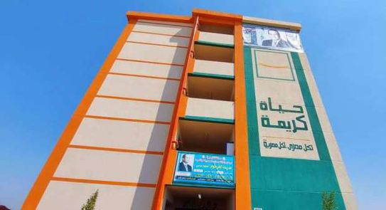 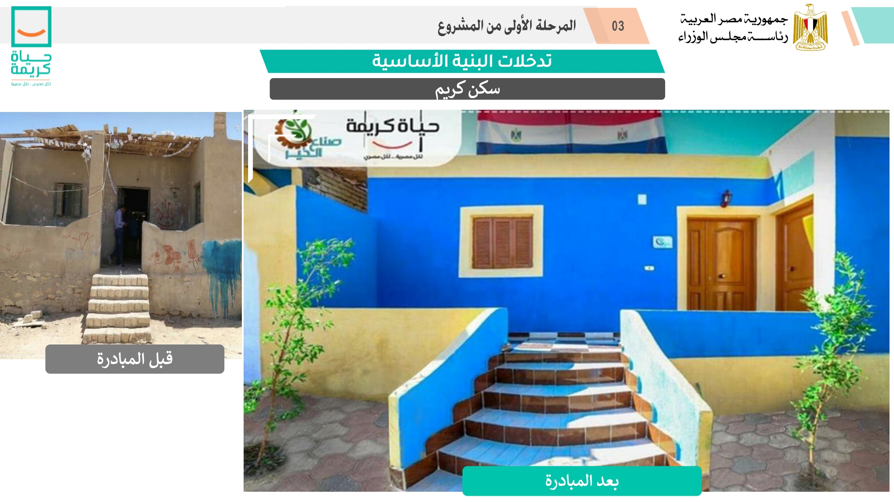The project is implemented on three stages:
The first, the villages of poverty rates of 70% in the more
The second, including villages of poverty rates, is 50% to 70%
The third of the villages of poverty poverty is less
than 50%
The most important villages are determined in accordance with the standards: the weak services of
basic and facilities (such as the basic networks, water, electricity and communication networks, schools, and
the construction of health care services to meet health care needs, the road network status) Lack of life
quality standards (Lowest ratios of education and increases of literacy. - High heavy density. The high rate of
poor families in the villages), and others than a growing gap between the population of rural and national
societalities
:ينفذ المشروع على ثلاث مراحل
الأول، معدلات الفقر في القرى 70% في أكثر
%الثاني، بما في ذلك قرى معدلات الفقر، هو 50% إلى 70
%ثلث قرى الفقر هو أقل من 50
وتتضمن أهم القرى وفقا للمعايير: وضعف الخدمات الأساسية والمرافق (مثل الشبكات الأساسية والشبكات والماء والكهرباء
والاتصالات والمدارس، وبناء خدمات الرعاية الصحية لتلبية احتياجات الرعاية الصحية، ووضع شبكة الطرق) نقص معايير جودة
الحياة (أدنى نسب التعليم وزيادة محو الأمية. - الكثافة الثقيلة العالية. ارتفاع معدل الأسر الفقيرة في القرى)،
وغيرها من الفجوة المتزايدة بين سكان المجتمعات الريفية والوطنية
The new administrative capital is the city that wonder about many people and this is due to its strategic strategy known as it is one of the most important projects that have been recently focused in Egypt, they are a cultural provider of Egypt and the investment in the formal investment in the most important areas of Cairo, this is because the recent period has occurred many of the population problems for this government worked on the focus of this project. In order to meet all the requirements for the Egyptian people, where it was implemented in the most important strategic areas that were attended by many government areas that could live in safety, which are from the cities that have become a station to draw many investors outside the country, so that they have many distinctive services and great recreational work, which lives in the lives of the kings, you can live and well-being in this population safely
العاصمة الادارية الجديدة هي المدينة التي يتساءل عليها العديد من الأشخاص وهذا يعود إلى أهميتها الاستراتيجية المعروفة، حيث أنها تعتبر واحدة من أهم المشاريع المتميزة التي تم التركيز عليها مؤخرًا في مصر، فهي من المدن التي تعمل على توفير مستقبل باهر لمصر ولأعمال الاستثمار التي توجد بها، حيث يكون الهدف الأساسي من وراء المشاريع التي يتم القيام بها في العاصمه الإداريه الجديده هو أن يتم زيادة المشاريع العمرانية من أجل تخفيف التكدس السكاني في معظم مناطق القاهرة، وهذا لأن الفترة الأخيرة حدث العديد من المشاكل السكانيةـ لهذا عملت الحكومة على التركيز في هذا المشروع وذلك من أجل أن يقوم بتلبية جميع متطلبات الخاصة بالشعب المصري، حيث تم تنفيذها في أهم المناطق الاستراتيجية المعروفة والتي تشهد الكثير من المناطق الحكومية التي يمكن العيش بجوارها في أمان، فهي من المدن التي أصبحت محطة لأنظار الكثير من المستثمرين في خارج البلاد، وذلك لكونها تتمتع بالعديد من الخدمات المتميزة والأعمال الترفيهية الرائعة، مما أن الحياة فيها تكون حياة الملوك، فيمكنك العيش براحة ورفاهية في هذه المدينة السكانية بأمان
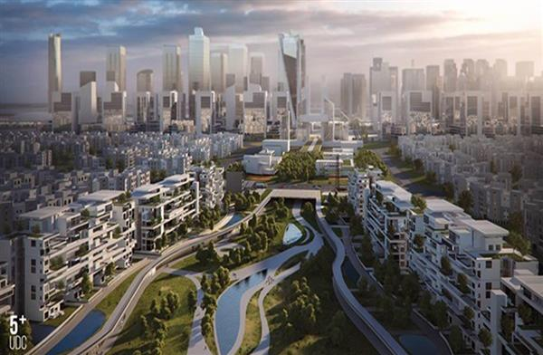 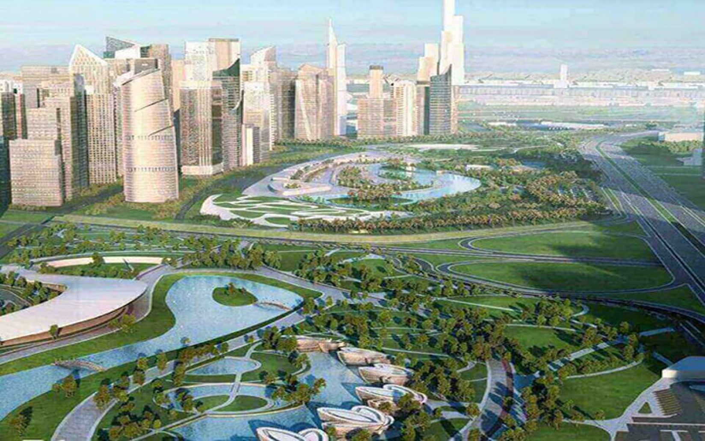The new administrative capital is the best and most prominent population populations, where many famous tourist countries, where the Ain Sokhna area is one of the most important sparkling areas of Cairo, with the capital, a lot of luxurious population and village villages, for example, the Hyde Park New Cairo city and the village of Sarai Fifth assembly, which is in the administrative capital, Beside, "Between the first projects that have been worked in the city of Administrative Dad. The new capital in Cairo is very close to the eye of Sokhna and the city's future, as well as the new city of the new administration is preparing about the city center of about 60 km away, meaning that it is not in the case of the fluorescence, even in close-of-enterprise and services, some of them are being uncomfortable but is very close to the eye of the Sukhna and the city of Suez, and is very close to the road that leads to the soldier 2, which helps you quickly reach the administrative capital. The main road is a road of Mohammed bin Zayed, which was named by this name to be used to be followed by the Crown Prince of the UAE, but it was not fully finished
تقع العاصمة الإدارية الجديدة في أفضل وأبرز المناط السكانية المتميزة، حيث تربط بين العديد من الدول السياحية المشهورة والتي تتركز فيها منطقة العين السخنة وهي من أهم المناطق السياحية المتألقة في القاهرة، حيث تحتوي العاصمة على الكثير من المناطق السكانية والقرى الفاخرة وعلى سبيل المثال مشروع هايد بارك القاهرة الجديدة وقرية سراى التجمع الخامس وهي من المشاريع الكبرى التي توجد في العاصمة الإداري، بجانب أن هناك الكثير من المشاريع الأخرى التي تم العمل عليها لتكون وجه سياحية متميزة في القاهرة. حيث تقع العاصمة الجديدة في القاهرة وتكون قريبة جدًا من العين السخنة ومدينة المستقبل، بالإضافة إلى أن مدينة العاصمة الإدارية الجديدة تبتعد عن وسط البلد حوالي 60 كيلو متر، وهذا يعني أنه لا يكون بالصحراء بل في قريب من المشاريع والخدمات الداخلية، فالبعض يقلق من كونه موجود على الحدو ولكنه يكون قريب جدًا من العين السخنة ومدينة السويس، كما يكون قريب جدًا من الطريق الذي يؤدي إلى جندالي 2 وهو الذي يساعدك في الوصول بسرعة إلى العاصمة الإدارية، ويكون الطريق الأساسي لها هو طريق محمد بن زايد والذي تم تسميته بهذا الاسم ليكون حمل لقب ولي عهد دولة الإمارات، ولكنه لم يتم الانتهاء منه بالكامل